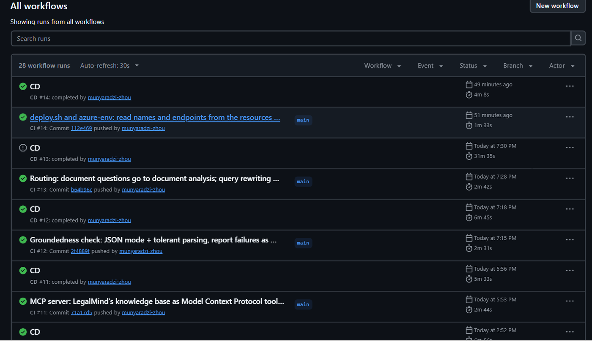

TL;DR — LegalMind's deployment has no API keys, connection strings, client secrets or registry passwords — not stored safely, but not existing. And a code-only release that once hung for 31 minutes now takes four. Both come from the same idea: make the dangerous path impossible instead of being careful on it.
Count the secrets in LegalMind's deployment: API keys, connection strings, client secrets, registry passwords.
The answer is zero. Not "stored in Key Vault". None exist. And the release that once took 31 minutes now takes four. This post is about both — because they turned out to be the same lesson.
Nothing to leak
Every Azure service LegalMind uses has key authentication switched off:
| Service | Setting |
|---|---|
| Azure OpenAI, AI Language, Document Intelligence, Content Safety, AI Search, Cosmos DB | disableLocalAuth: true |
| Blob Storage | allowSharedKeyAccess: false |
| Container Registry | admin user disabled |
With keys off, the only way in is an Entra ID token — and the only identity with tokens for these services is one user-assigned managed identity, shared by the two Container Apps, with exactly the data-plane roles it needs: Cognitive Services OpenAI User, Search Index Data Contributor, Cosmos DB Built-in Data Contributor, Storage Blob Data Contributor, AcrPull.
Why user-assigned rather than system-assigned? Because the roles must exist before the apps start. A system-assigned identity is born with its app, so the first requests would fail with 403 while role assignments catch up. A user-assigned identity is created first, granted every role, then attached.
What this buys you: no key rotation, no leaked .env, no secret-scanning alerts, and every access attributable to an identity.
Logging in from GitHub without a password
CI/CD needs to reach Azure too. The old way is a service principal with a client secret pasted into GitHub. Secrets leak, expire and get copied around.
LegalMind uses OIDC workload identity federation:
- The workflow asks GitHub for a short-lived OIDC token (
permissions: id-token: write). - An app registration in Entra ID has a federated credential that trusts GitHub's token issuer — for one exact subject: this repository, this environment.
azure/loginexchanges the GitHub token for an Azure token.
The repository holds three identifiers — client ID, tenant ID, subscription ID — and no credentials.
The first run failed:
AADSTS700213: No matching federated identity record found for presented assertion subject
'repo:munyaradzi-zhou@58000286/LegalMind-AI@1455227137:environment:dev'
GitHub now includes the numeric owner and repository IDs in the subject for new repositories. The error message printed the exact subject it received; copying that string into the federated credential fixed it. Read errors literally.
The deploy that hung
CD normally took five to seven minutes. One evening, for a pure code change, it ran for half an hour.
Diagnosis, one step at a time:
az deployment operation group list— every resource Succeeded except Document Intelligence, still Running.- The resource's provisioning state: Accepted. Stuck.
- Its activity log: earlier updates had taken 60–90 seconds; this one showed no progress at all.
- The Azure status page: no incident.
A control-plane hiccup on one resource — not my bug. I cancelled the deployment (az deployment group cancel deletes nothing) and the resource returned to Succeeded.
But the real question was: why was a code change touching Document Intelligence at all?
Because my pipeline re-applied the entire infrastructure template on every push. Idempotent in theory. In practice: twenty update requests to twenty resources on every release, any one of which can stall it.

The 31-minute run, and the four-minute run after the fix.Shrinking the blast radius
Image tags are commit SHAs, so the pipeline knows exactly which commit is running. The deploy script now asks git one question:
RUNNING_SHA=$(current_tag "ca-legalmind-api-dev")
if git diff --quiet "$RUNNING_SHA" "$NEW_SHA" -- infra/; then
az containerapp update -g "$RG" -n "$API_APP" --image "$REGISTRY/legalmind-api:$NEW_SHA" # code only
else
deploy_infra "$NEW_SHA" # infra changed
fi
No infrastructure change? Only the container images are swapped, and the AI services aren't touched. Infrastructure changed? The template runs, as before. (CD checks out the full git history so this diff works.)
The incident fixed one more thing. My scripts read endpoints from the deployment's outputs — and a cancelled deployment has no outputs. They now read names and endpoints from the resources themselves.
Result: code-only releases in about four minutes, and a stuck control-plane operation can no longer block a bug fix.
The safety net around it
The fast path is only safe because of what runs before and after it:
- Before: CI on every push — lint, strict type checking, 125 unit tests, a security scan of the code and its dependencies, a build of every infrastructure template, and both container images built and started, with the API's
/healthchecked. - After: the deploy waits for the new revision to answer, then runs nine smoke tests against the live URL. A release is only green if the deployed app works.
- Rollback is one command: point the app at the previous commit's image tag.
The lesson
Takeaways - Remove options rather than adding procedures. No keys means nothing to rotate, leak or scan for. - Use a user-assigned identity when roles must exist before the workload starts. - Federated credentials replace CI secrets; the subject string is the security boundary — match it exactly. - A release should touch only what changed. Reduce the blast radius of routine work. - When something hangs, narrow it down operation by operation instead of waiting.
That's the series: from a design document to a system that's measured, guarded and boring to deploy. One more short post covers what happens when the user isn't a person — the epilogue.
LegalMind AI is open source: github.com/munyaradzi-zhou/LegalMind-AI. The sample organisation and documents are fictional; LegalMind is a demonstration, not legal advice.